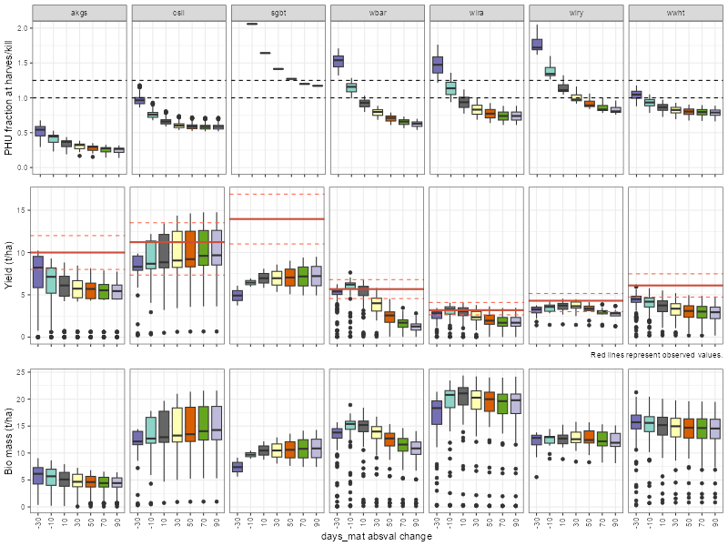
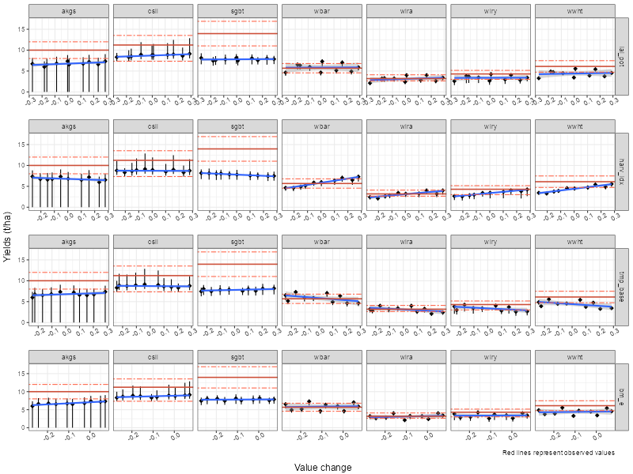
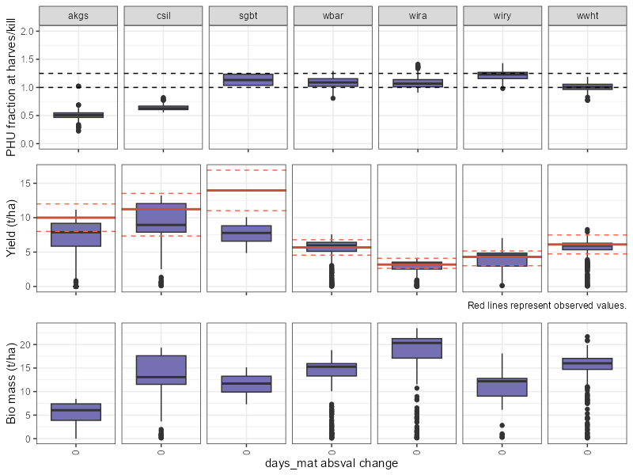

Crop Yields
Soft calibration workflow for crop yields in SWAT+ models
Source:vignettes/sc-crops.Rmd
sc-crops.RmdThe aim of crop yield calibration is to adjust relevant crop parameters so that the SWAT+ simulation matches the observed crop yields. The workflow proposed below is based on the script that was initially developed in the EU project OPTAIN and described in one of its deliverables. The reader is referred there for more information about the workflow and the results of its application in several case studies in Europe.
1. Loading required packages
The SWATtunR package is essential for soft calibration,
as it provides the necessary functions for the calibration process.
Additional packages are required for data manipulation, visualization,
SWAT+ model runs, etc.
2. Defining settings
This step requires defining the SWAT+ model path, the path to the crop data file.
For the crop yield soft calibration, it’s essential to have accurate
data on observed crop yields expressed in dry matter weight. Since
reference data is typically provided as fresh matter weight, the values
need to be multiplied by crop-specific conversion factors prior to their
use in calibration. In the proposed workflow, basin-averaged yield data
are required, so this solution may not fit to large river basins with
spatially heterogeneous yields. The data is typically sourced from a
'*.csv' file, with columns specifying the plant names and
their corresponding mean yields. If additional information is
accessible, such as the minimum and maximum ranges for average annual
observed yields, it’s advisable to include them in the
'*.csv' file as well, under the columns labeled yield_min
and yield_max respectively. This ensures a comprehensive dataset for
effective calibration and analysis.
# Path to the SWAT+ model
model_path <- '../test/my_dearest_model'
# Path to the crop data file
crop_data_path <- '../inst/extdata/crop2.csv'
# Set the path to save results of the soft calibration
sc_res <- '../test/simulations'
# Set the number of cores available for calculations.
# Number of cores for 12 runs use 3, 4, 6, or 12 cores (if available)
cores <- 3
## Set the start and end date for the simulations and warm-up period
start_date <- '2015-01-01'
end_date <- '2020-12-31'
years_skip <- 2An example file with observed crop yields is provided below.
##
crops_obs <- read_csv(crop_data_path, show_col_types = FALSE) %>%
filter(!is.na(yield_mean))
head(crops_obs, 3)## # A tibble: 3 × 4
## plant_name yield_min yield_max yield_mean
## <chr> <dbl> <dbl> <dbl>
## 1 akgs 8 12 10
## 2 csil 7.34 13.5 11.2
## 3 sgbt 11.0 16.9 14.03. Days to maturity parameter changes
In the proposed workflow, one preliminary step before the actual
calibration of crop parameters is adjusting the new SWAT+ parameter
days_mat (days to maturity) that replaced the older concept
of heat units to maturity in previous SWAT versions. The goal is to set
the potential heat units (PHU) fraction at harvest within a plausible
ranges for different crop types.
It is recommended to check at this stage that the crop-specific
values of the base temperature parameter (tmp_base) are
realistic for the case study.
3.1. Initialization
The preparation of this step requires the conversion of observed
yields information into numeric vectors and initialization of
'plants.plt' file.
# Convert observed yields to numeric vectors
for(i in c("yield_mean", "yield_min", "yield_max")){
if(i %in% colnames(crops_obs)){
assign(i, deframe(select(crops_obs, all_of(c("plant_name", i)))))
} else {
assign(i, NULL)
}
}
## Initialize unmodified backup version of plants.plt
if(!file.exists(paste0(model_path, '/plants.plt.bkp0'))) {
copy_file_version(model_path, 'plants.plt', file_version = 0)
}3.2. Days to maturity changes
The following code generates a parameter input table with changes for
required for SWAT+ model run. The names are converted into SWATrunR
syntax for the days to maturity parameter. The code snippet also
samples changes for days to maturity, allowing users to define the crops
to be used in soft calibration and the initial values for days to
maturity. Those initial values originate from the default plants
database and may very likely lead to unreliable simulation of PHU
fraction. In the example below, the addition factor to
days_mat parameter varies between -30 and
100, which could be adjusted, if necessary.
# Reading the plants.plt input file from the initial unchanged backup file
plants_plt <- read_tbl(file_path = paste0(model_path, '/plants.plt.bkp0'))
plants_plt <- select(plants_plt, - any_of('description'))
# Define all crops which should be calibrated
# Alternatively define a name vector (if you also want to consider crops
# which are not given in the observation input file).
crops <- crops_obs$plant_name
# crops <- c('crop1', 'crop2', 'crop3')
# Get a vector with days_mat initial values for the selected crops
dmat_init <- plants_plt %>%
filter(name %in% crops) %>%
select(name, days_mat) %>%
mutate(days_mat = ifelse(days_mat == 0, 110, days_mat)) %>%
## if days_mat is 0, set it to 110 (as it is the default value in the SWAT+ code)
deframe()
# Sample changes for days to maturity. Depending on the number of cores you have
# available choose a reasonable interval for the days to maturity which you want
# to test. With an interval of 10 e.g. you have to do 12 simulations (3 rounds
# on 4 cores), with an interval of 5 its 23 simulations.
dmat_step <- 20
dmat_chg <- round(seq(-30, 100, dmat_step))
# Generate the parameter input table with the changes for all crops and convert
# the names into SWATrunR syntax
par_dmat <- map_df(dmat_init, ~ .x + dmat_chg) %>%
set_names(., paste0('dmat_', names(.),
'::days_mat.pdb | change = absval | name = ' , names(.)))4. Run simulations for days_mat adjustment
In this step, SWATrunR package is
used to run simulations with days_mat parameter varying in
the predefined range, in order to analyze the PHU fractions, yields and
biomass for selected crops.
# make sure to adjust simulation settings (start date, end date and warm-up period) to your situation
ylds_phu_dmat <- run_swatplus(project_path = model_path,
output = list(yld = define_output(file = 'mgtout',
variable = 'yld',
unit = crops),
bms = define_output(file = 'mgtout',
variable = 'bioms',
unit = crops),
phu = define_output(file = 'mgtout',
variable = 'phu',
unit = crops)
),
parameter = par_dmat,
start_date = start_date,
end_date = end_date,
years_skip = years_skip,
n_thread = cores)
# Optionally save the simulation runs.
if(!dir.exists(sc_res)) dir.create(sc_res)
saveRDS(ylds_phu_dmat, paste0(sc_res, "/ylds_phu_mat.rds"))5. Plot PHU fractions, yields, and biomass for days to maturity changes
In this figure, we visualize the PHU fractions, yields, and biomass
for various days to maturity settings. This graphical representation
serves as a reference to adjust the initial values of
days_mat for each crop in the simulation.
For grain crops, which typically dry off before harvest, aim for PHU fractions ranging from approximately 1.2 to 1.5 to optimize yield. Vegetables, on the other hand, tend to have a PHU fraction around 1, possibly slightly above, which is considered optimal. Crops like basil and broccoli are harvested before reaching full maturity. In such cases, PHU fractions can be lower than 1, ranging from 0.5 to 0.9. Please note that values shown in the plot represent the first harvest. In case of multiple harvests (e.g. grassland, alfalfa), the PHU fraction should also be expected to be well below 1.
These are some generic suggestions, but it is recommended to check which PHU fractions should be the target in a given case study, as this can be both crop- and region-specific.
Furthermore, it is useful to check already at this stage if the
simulated yields fall within the range of locally observed yields to
maintain accuracy and relevance and how days_mat affects
yields. The actual soft calibration of yields will be described in steps
8-11.
plot_phu_yld_bms(ylds_phu_dmat, dmat_chg, yield_mean, yield_min, yield_max)
6. Select days to maturity parameter changes to apply
Based on the figure provided, identify the necessary adjustments to the days to maturity parameter in the SWAT+ model. These adjustments should be made to ensure that the PHU fractions, yields, and biomass values of the specified crops align with the observed data.
# Add values based on figure to this line (please add all crops from the initial selection)
# names(dmat_init) # Print all crop names
chg_dmat_sel <- c(akgs = -30, csil = 10, sgbt = 70,
wbar = -10, wira = -10, wiry = 0, wwht = -30)
# Adding defined changes to initial days_mat values of crops
dmat_sel <- chg_dmat_sel[names(dmat_init)] + dmat_init
dmat_sel <- enframe(dmat_sel, value = 'days_mat_upd')7. Write days_mat modifications into a file
Write the changes to the 'plants.plt' file to update the
days to maturity values for the selected crops and also backup the
updated file to 'plants.plt.bkp1' file.
# Update the days_mat values in plants.plt according to the changes defined above.
plants_plt <- plants_plt %>%
left_join(., dmat_sel, by = 'name') %>%
mutate(days_mat = ifelse(!is.na(days_mat_upd), days_mat_upd, days_mat)) %>%
select(-days_mat_upd)
## Overwriting original plants.plt with the updated days_mat values.
plants_plt_fmt <- c('%-12s', '%-18s', '%-12s', rep('%12.5f', ncol(plants_plt) - 3))
write_tbl(plants_plt, paste0(model_path, '/plants.plt'), fmt = plants_plt_fmt)
# Create a backup file with the changed days_mat values
copy_file_version(model_path, 'plants.plt', file_version = 1)## [1] TRUE8. Read crop calibration parameters
In the proposed workflow, four parameters are suggested to be used in
crop calibration: lai_pot
(maximum potential leaf area index), harv_idx
(harvest index for optimal growth conditions), tmp_base
(minimum temperature for plant growth) and bm_e
(biomass energy ratio). These parameters were found to be effective in
the OPTAIN modelling
report. However, in case if the user wants to add other parameters
from the 'plants.plt' file, the code can be easily
adapted.
plants_plt <- read_tbl(file_path = paste0(model_path, '/plants.plt'))
par_ini <- plants_plt %>%
filter(name %in% crops) %>%
select(name, lai_pot, harv_idx, tmp_base, bm_e)#, days_mat)
par_ini## # A tibble: 7 × 5
## name lai_pot harv_idx tmp_base bm_e
## <chr> <dbl> <dbl> <dbl> <dbl>
## 1 csil 4 0.9 8 39
## 2 sgbt 5 2 4 30
## 3 wbar 4 0.54 0 30
## 4 wwht 4 0.4 0 30
## 5 wira 3.5 0.23 5 38
## 6 wiry 4 0.4 0 30
## 7 akgs 4 0.75 0 12.59. LHS sampling of crop parameters
We will use the sample_lhs function to create a Latin hypercube sample of parameter values for the selected crops. The sample will be used to run SWAT+ simulations and evaluate the impact of the parameter changes on the model output. The syntax for the parameter boundaries could be found on the SWATrunR page.
In the example below, the relative changes of +/-30% are
applied to most parameters (bm_e being an exception, since
changes above +10% were leading to the SWAT+ model failed run in some
cases). Since temperature is an additive variable, absolute change
method is a better option for tmp_base. The range for
tmp_base should be kept narrow, as this parameter may also
affect PHU fraction estimation.
## Define changes to be applied to the initial parameter values
## Make sure your updates will not produce unrealistic values (i.e. negative values)!!!
par_bnd <- tibble('lai_pot.pdb | change = relchg' = c(-0.3, 0.3),
'harv_idx.pdb | change = relchg' = c(-0.3, 0.3),
'tmp_base.pdb | change = abschg' = c(-1.5, 1.5),
'bm_e.pdb | change = relchg' = c(-0.3, 0.1))
par_crop <- sample_lhs(par_bnd, 10) ## 10 samples for each parameter will be generated for testing purposes.
## The number of samples can be adjusted based on the available computational resources.
## Recommended number of samples is 50-100.10. Make SWAT+ model runs for crop yield calibration
In this step we run the SWAT+ model with the updated parameters for selected crops. The simulation results will be used to evaluate the effect of the parameter changes on the model output.
ylds_plnt_par <- run_swatplus(project_path = model_path,
output = list(yld = define_output(file = 'mgtout',
variable = 'yld',
unit = crops)),
parameter = par_crop,
start_date = start_date,
end_date = end_date,
years_skip = years_skip,
n_thread = cores)
## Save the results to the file
saveRDS(ylds_plnt_par, paste0(sc_res, "/ylds_plnt_par.rds"))11. Examine results in figures
Plotting simulation results in ‘dotty plots’ can help to identify parameter sensitivities (how yields of different crops respond changes in individual parameters), thus providing suggestions how to modify the ranges in subsequent simulation. After examining the patterns in dotty plots, you may consider adjusting certain parameter ranges (step 9) and then rerunning the model (step 10). Subsequently, you can reanalyze the outcomes with plot_dotty_yields function to gain further insights or refine your understanding of the system being modeled. The ultimate goal is that simulated yields match with observed yields as well as possible. It is recommended to aim for an average error below 10%. In case if the observed min and max were provided, it is good if the simulated yield variability matches with these ranges.
## Plot dotty figures for the selected crops
plot_dotty_yields(ylds_plnt_par, yield_mean, yield_min, yield_max)
12. Update parameter values in plants.plt file
After examining the results of the SWAT+ simulations in step 11,
decision on which parameter changes to implement needs to be taken. Not
all parameters need to be changed, but only those that appeared to be
sensitive and helped to improve the model performance. Different crops
can exhibit sensitivities to different parameters, so it is important to
make a crop-specific selection of parameter changes. The following code
snippet shows how to update the 'plants.plt' file. Please
note that these are not the actual parameter values, but the changes in
parameters (by relative or absolute change method).
## Fix changes you want to write in plants.plt file
chg_par <- tibble(
name = c("akgs","barl", "csil", "sgbt", "wbar", "wira", "wiry", "wwht"),
lai_pot = c( 0, 0, 0, 0, 0, 0, 0, 0),
harv_idx = c( 0, 0, 0, 0, 0, 0, 0.3, 0.3),
tmp_base = c( 0, 0, 0, 0, 0, 0, -0.2, -0.2),
bm_e = c( 0, 0, 0, 0, 0, 0, 0, 0)) %>%
left_join(select(plants_plt, name), ., by = 'name')
## Update parameter values in plants.plt
for (i in 1:ncol(par_bnd)) {
par_i <- names(chg_par)[i + 1]
chg_typ_i <- sub(".*change = ", "", names(par_bnd)[i])
plants_plt[par_i] <- update_par(plants_plt[[par_i]], chg_par[[par_i]], chg_typ_i)
}
## Overwriting plants.plt with the updated parameter values.
write_tbl(plants_plt, paste0(model_path, '/plants.plt'), fmt = plants_plt_fmt)13. Rerun SWAT+ with the final plants.plt file
After updating the 'plants.plt' file with the new
parameter values, you can rerun the SWAT+ model to check if the match
between the simulated and observed yields is as expected. In addition to
yields, biomass and PHU outputs are also extracted.
phu_yld_final <- run_swatplus(project_path = model_path,
output = list(yld = define_output(file = 'mgtout',
variable = 'yld',
unit = crops),
bms = define_output(file = 'mgtout',
variable = 'bioms',
unit = crops),
phu = define_output(file = 'mgtout',
variable = 'phu',
unit = crops)),
start_date = start_date,
end_date = end_date,
years_skip = years_skip)
## Save the results to the file
saveRDS(phu_yld_final, paste0(sc_res, "/phu_yld_final.rds"))14. Examine the final results
In this step, you can examine the final results (yields, biomass, PHU fraction) of the SWAT+ simulations. If the results are satisfactory, you may consider your model setup as successfully soft-calibrated for crop yields.
plot_phu_yld_bms(phu_yld_final, 0, yield_mean, yield_min, yield_max)
For a more in-depth analysis, users can employ at this stage
additional SWATdoctR
functions, such as plot_hru_pw_day(). This function
enables visualization of daily time series of variables from the output
file 'hru_pw_day.txt' (e.g. biomass, LAI) for selected HRUs
and time periods, thus providing valuable insights into the simulated
crop growth. This might help in getting a better understanding of the
model’s outputs and decide if crop yield soft calibration results are
acceptable.
In the proposed workflow, after completing the soft calibration process for crops, the users are advised to proceed with soft calibration for water yield presented in an another page.